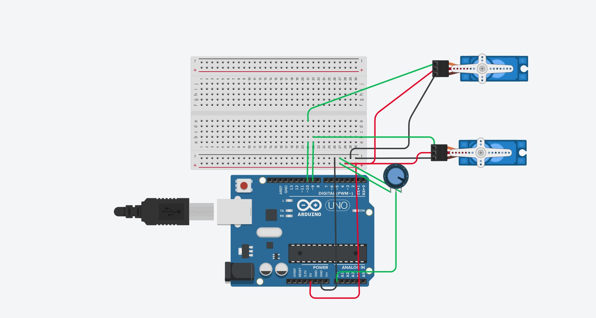
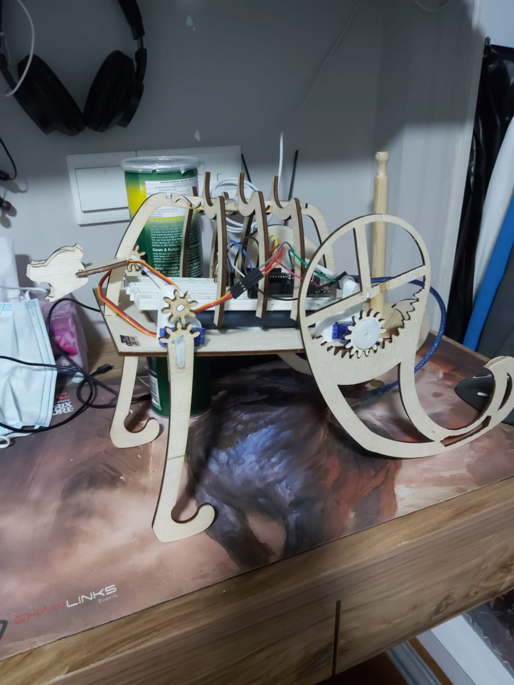

EP1000
Project
I will be documenting the whole project from start to finish, including my comments, thought process and what could have been possibly done better.
I had an idea
An ambitious idea
I wanted to make something like a toy that could walk like an animal
with a rough idea in my brain, i went to do some rudementary research
Research phase
I watched a few videos about how people have designed walking robots
I was in awe about how well designed they were, and the concept of a mechanical creation, something potrayed to be so stiff, moving so fluidly almost like an animal. Struck a chord with me
The concept of biomimicry; which is when designers take inspiration from creatures from our natural world, who have evolved over millions of years to adapt for a purpose, and apply them into their designs. An example would be the B2 bomber plane, taking inspiration from one of natures fastest animals, which is the falcon, so as to copy how the falcon can minimise its air resistance, and as such, make itself faster.
there was a video i saw, where a robot ran at the speed of 28km an hour on legs made to resemble a cheetah. The video was posted close to 8 years ago, so i couldnt imagine how far technology has progressed since then
So i decided to base my design off the one shown in the video above
I did abit more basic research and learnt the ideal CG for a quadraped body, which is in the middle, i wasnt sure if i could design something with a precise CG, but i would try to implement that.
Animal legs have more joints than humans, in the case of a dog it has 3 joints and it walks on its toes, it is able to do that because it is a quadraped, with 4 legs to support its weight.
However, i thought that was too confusing to design for me, and i tossed that idea out of the window. This is a decision i would come to regret later, and definitely contributed to the downfall of my product
Concept Sketching
I had all these ideas and requirements, so i started to sketch down my ideas

This was my first sketch, its extremely messy, but the general idea was to have something that would crawl around
I had planned to use a rack and pinion system at first, but i changed ideas after watching a video.
i decided to use an axel rod to transmit motion from one leg, to the other leg on the other side
i had also decided to use a inside gear as i felt that a spinning motion in the legs would be more likely to generate more back thrust for the body, as compared to a rack and pinion, which might have actually dragged the body backwards due to the increased friction from the larger surface area contact with the floor
heres another sketch i did for this new idea

see the similarity in mechanisms?
at that point, i wanted to use 1 stepper motor and 1 servo
\3D design
I spent alot of time doing the first draft

i measured the size of the servos i was going to use so i could get an accurate representation of how this product was going to turn out, also it was important as i needed to ensure the gears would mesh,hence it needed to be in the same center line, and the distance needed to within the two gears pitch circle for both gears to mesh.

I wasnt quite satisfied with this model, but i needed to show my teacher something so as to get his input on what to do next
This design still uses a stepper motor for the back leg, that was the orignal idea before i switched to 2 servo motors.
First Feedback from teacher
He told me to straighten the front legs more and to curve the back legs more
So keeping his advice in mind, i then moved forward to design the next version

This design utilizes more curved legs, this serves the purpose of getting more pushing power because of the shape, while hopefully still maintaining enough contact with the ground to stand stably
In order to spice up the aesthetic, i added a rib cage, and a bear head.I also cut engravings into the parts so as to get a sort of "Runic" and "vintage" toy bear feel.
This was actually ver 11 fyi
Programming
One of the challenges i faced for programming was that i needed to find way to replicate how an animal ran
So i fired up tinkercad and got to work
i referenced my running motion off this gif of a cheetah running

This was my circuit design in the end
The way it will move is that, the front legs will move backwards first, followed by the back legs moving forwards, then the front legs will move back infront again, while the back legs moves backwards and pushes the bear along.
I acheived this by alternating both servos 4 times each, both servos takes turns to move forwards and backwards in an alternating manner.
i also added a potentiometer, this will help me to control the speed in which the bear moves as it will reduce or increase the amount of time taken for the servo to rotate
3D printing
I specifically designed 5 parts to be 3D printed. My servo holders for both the front and back, the 2 other leg pegs on the right side and the axel rod

There was a slight hiccup during my first printing, i accidentally misdimensioned several parts.
But after that everything was fine, all my 3D printed parts managed to fit well onto my laser cutted base
Laser cutting
i had a little bit of trouble here, i had forgotten to do parametric modelling for some parts, and i found out on telegram that the lab only has a specific width of plywood left
So i had to go back and redesign all my parts, wasting my time

Assembly, testing and final words
we are almost at the end
after an hour i finished assembling
then it was time to start testing it
it was terrible
extremely bad
i realised how many mistakes i have made
leaving everything up to the prototype assembly stage to test out, instead of trying to iron out as many design errors as possible in the 3D design stage
There were many mistakes i couldnt have seen coming because the only way to test the product was by printing it out
ill now show the back leg test first

it works well, and the speed control works better than i expected.
However, when i did the walking test...

the back leg cant push the body even though i am supporting the weight of the body
so the body cannot achieve locomotion
when too much force is exerted by the legs, the gear pops out
i will cover more about these mistakes in my next section
mistakes and suggestions to improve
1. axle rod has no support towards the right side, hence motion cannot be transfered to the right leg from the left, solution is to remake the right peg to include a structure that can hold the axle rod as well
2. axle rod keeps moving left to right, this prevents the gears from meshing properly and sometimes the gears may even slip out, solution is to drill a hole through the axel rod and put a pin through it, this will prevent it from sliding around
3. Project cannot stand on its own, actually multiple causes for this problem, first is that the battery pack is too heavy, secondly is because the legs are too tall but yet flimsy, and third is that since the legs are actually mounted on the servo itself, there is very little in the aspect of actually keeping the legs attached to the body, so they can just pop off when they experience too much weight. The solution would be to make the legs shorter, while also reducing the size and weight of the battery pack, while also making it so the legs arent connected directly to the servo. instead, they should be mounted on a rod that is securely attached to the body and ensures that he legs cannot just pop off, while the servo is placed somewhere else, but yet has gears that are in mesh with the rod which also ahs gears, allowing the project to move.
these were the 3 main big problems i feel if were fixed could allow the project to work properly. There are other more minor ones with relatively simple fixes, like
1. The "ribcage" shakes. Make the width of the ribcage bigger an the hole smaller so it fits flush
2. Engravings on some parts actually made them more fragile and prone to breaking. Dont use engravings
3. Gears dont mesh properly. Do the proper calculations next time
4. No space for wires. Design so that the wire can fit through the part instead of around it
5. no proper way to switch the project off, even when potentiometer is at its max resistance, it still continues to move. Wire a switch to the circuit next time
ill end off this analysis with a video link for the video i made about the project
The end?
nah theres no such thing, as long as there are improvements to be made, there is no end to prototyping